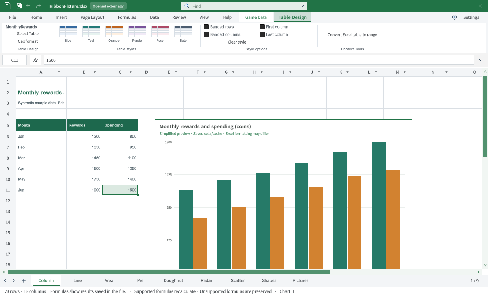

Tracefolio REPORTS & ISSUES
Tracefolio REPORTS & ISSUESExcel vs TurnRoom · 탭별46TC와 원본 사진 비교
부분 완료일반·특수·제품 전용 탭46TC.30케이스에 Excel 원본 연결, 현재25장 재촬영. 누락·미구현·미실행을 공개합니다.
작업 결과
탭별 TC와 사진 대조 결과를 아래7개 문서로 나누었습니다. Excel 동등성이나 전체 기능 QA 통과 상태가 아닙니다.
변경 내용
적용 내용
| TC 범위 | 탭별 사진·실행 결과 |
|---|---|
| TC-RIB-01–TC-RIB-07 | 일반 탭 1 |
| TC-RIB-08–TC-RIB-13 | 일반 탭 2 |
| TC-RIB-14–TC-RIB-20 | 특수탭 1 |
| TC-RIB-21–TC-RIB-27 | 특수탭 2 |
| TC-RIB-28–TC-RIB-33 | 특수탭 3 |
| TC-RIB-34–TC-RIB-39 | 게임 데이터·설정 |
| TC-RIB-40–TC-RIB-46 | 구형·기준 목록 보충 |
원본58묶음에는 구형 별칭과 Backstage·컨텍스트 메뉴가 포함되어 있습니다. 58묶음 → TC 연결에서 빠진 항목 없이 확인할 수 있습니다. 리본 탭이 아닌 두 묶음은 명시해 구분했습니다.
이번 구현: ChartGallery A5:C11 실제 표 등록, 차트1–48번호 선택 목록, 삽입 탭 도형187종 스크롤 목록.9개 언어 가이드도 갱신했습니다.
v1.0.1 집계 정정: 보충 TC의 빠른 실행 원본1건을 포함하면 사진 원본이 연결된 케이스는30개입니다.
검증
Unity6000.0.83f1의 실제 Editor GUIView를 Direct3D11로 캡처했습니다. 소프트웨어 목업·AI 이미지가 아닙니다. 별도 QA 프로젝트에서 실행했고 데스크톱 마우스·키보드는 사용하지 않았습니다. 실제 IMGUI 타일3개 클릭과 파일 팝업 생성도 검사했습니다.
| 검증 | 실제 결과 |
|---|---|
| 편집 API 회귀 | 730건 통과 |
| IMGUI 경로 | 삽입 도형·차트 스타일·표 프리셋 클릭 및 파일 팝업4건 |
| 최신 Unity 캡처 | 25장 |
| Excel 원본 연결 | 46TC 중30케이스. 일부 원본은 부분 화면·구형 또는 웹 |
| 대응 원본 없음 | 제품 고유 기능6케이스 |
| Excel 원본 미확보 | 10케이스 |
전체46TC JSON · 캡처·원본 출처·SHA256 · 730검사 · IMGUI 검사


남은 사항
원본과 같은 차트 효과 썸네일 갤러리는 미구현입니다. 그림 스타일·도형 스타일·피벗·스파크라인 등도 누락이 있어 각 TC에 기록했습니다. 번호 목록·API 테스트를 갤러리 동등성 통과로 바꾸지 않았습니다.
Excel 원본은 출처가 있는 게시 이미지입니다. 이 PC의 동일 빌드 Excel을 직접 촬영한 화면은 아니며, 확보하지 못한 원본은 미실행으로 남겼습니다. Word 그래픽 화면·PowerPoint3D 화면·잘못 연결된 PivotTable 그룹은 Excel 비교 원본에서 제외했습니다.
Windows 실제 입력과 각 명령의 저장·취소·Undo 전수 반복은 미실행입니다. 제품 소스는 적용했지만 제품 저장소의 커밋·푸시는 이번 회차에서 수행하지 않았습니다.
이미지는 원본 바이트와 글자 판독을 보존했습니다. 최대234338바이트인 로컬라이징 캡처는200KB 목표보다 크지만 재가공하지 않았습니다. 교훈 검토: 사진·제품·탭의 일치와 실제 실행을 분리하는 기존 전역 규칙을 적용했습니다. 전역 지침 변경 없음.
작업 시간
- 제안 시간: 최초15–25분. 전체 탭 비교·TC 게시 요청 추가 후35–50분 예상.
- 실제로 완료된 시간: 시작2026-10-31 22:49:21 KST. 이 보고서 작성 시38분7초 경과, 2026-10-31 23:27:28 KST. 공개 배포 확인 전이며 전체 기능 완료 시각은 아닙니다.
- XERJ: 사용 — XERJ ContextualTabs·SelectedTable 검색 후보를 현재 소스와 대조하고 XLSX ZIP 및 Unity 실행으로 확인했습니다.